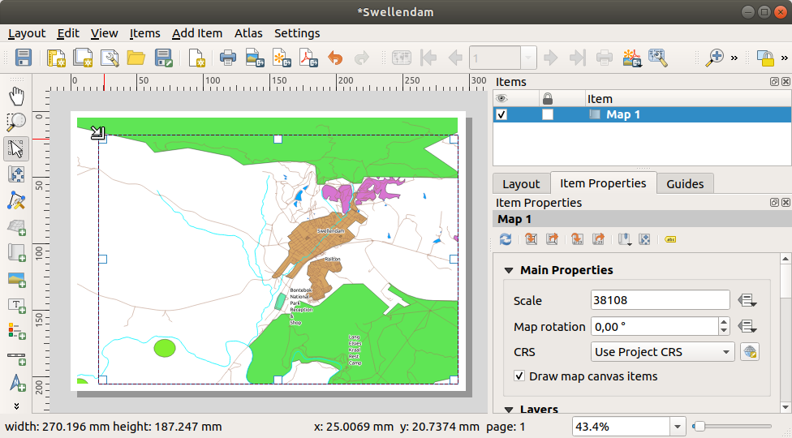
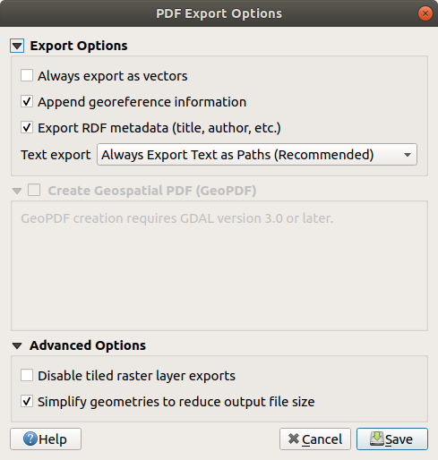

Now that you’ve got a map, you need to be able to print it or to
export it to a document.
The reason is, a GIS map file is not an image. Rather, it saves the
state of the GIS program, with references to all the layers, their
labels,colors, etc.
So for someone who doesn’t have the data or the same GIS program
(such as QGIS), the map file will be useless.
Luckily, QGIS can export its map file to a format that anyone’s
computer can read, as well as printing out the map if you have a
printer connected.
Both exporting and printing is handled via the Print Layout.
The goal for this lesson: To use the QGIS Print Layout to create
a basic map with all the required settings.
In this example, the composition was already the way we wanted it.
Ensure that yours is as well.
Right-click on the sheet in the central part of the layout window
and choose Page properties… in the context menu.
Check that the values in the Item Properties tab are
set to the following:
Size: A4
Orientation: Landscape
Now you’ve got the page layout the way you wanted it, but this
page is still blank.
It clearly lacks a map. Let’s fix that!
Click on the Add Map button.
With this tool activated, you will be able to place a map on the
page.
Click and drag a box on the blank page:
The map will appear on the page.
Move the map by clicking and dragging it around:
Resize it by clicking and dragging the boxes on the edges:

Note
Your map may look a lot different, of course!
This depends on how your own project is set up.
But not to worry! These instructions are general, so they will
work the same regardless of what the map itself looks like.
Be sure to leave margins along the edges, and a space along the
top for the title.
Zoom in and out on the page (but not the map!) by using these
buttons:
Zoom and pan the map in the main QGIS window.
You can also pan the map using the Move item content tool.
The map view updates as you zoom in or zoom out.
If, for any reason, the map view does not refresh correctly,
you can force the map to refresh by clicking the
Refresh view button.
Remember that the size and position you’ve given the map doesn’t
need to be final.
You can always come back and change it later if you’re not
satisfied.
For now, you need to ensure that you’ve saved your work on this
map.
Because a Print Layout in QGIS is part of the main map file,
you must save your project.
Go to the Layout ►Save Project.
This is a convenient shortcut to the one in the main dialog.
Now your map is looking good on the page, but your readers/users are
not being told what’s going on yet.
They need some context, which is what you’ll provide for them by
adding map elements.
First, let us add a title.
Click on the Add Label button
Click on the page, above the map, accept the suggested values in
the New Item Properties dialog, and a label will
appear at the top of the map.
Resize it and place it in the top center of the page.
It can be resized and moved in the same way that you resized and
moved the map.
As you move the title, you’ll notice that guidelines appear to
help you position the title in the center of the page.
However, there is also a tool in the Actions Toolbar to help
position the title relative to the map (not the page):
Click the map to select it
Hold in Shift on your keyboard and click on the label so
that both the map and the label are selected.
Look for the Align selected items left button
and click on the dropdown arrow next to it to reveal the
positioning options and click Align center:
Now the label frame is centered on the map, but not the contents.
To center the contents of the label:
Select the label by clicking on it.
Click on the Item Properties tab in the side panel
of the layout window.
Change the text of the label to “Swellendam”:
Use this interface to set the font and alignment options
under the Appearance section:
Choose a large but sensible font (the example will use the
default font with a size of 36)
Set the Horizontal Alignment to Center.
You can also change the font color, but it’s probably best to
keep it black as per the default.
The default setting is not to add a frame to the title’s text box.
However, if you wish to add a frame, you can do so:
In the Item Properties tab, scroll down until you
see the Frame option.
Click the Frame checkbox to enable the frame.
You can also change the frame’s color and width.
In this example, we won’t enable the frame, so here is our page so
far:
To make sure that you don’t accidentally move these elements
around now that you’ve aligned them, you can lock items into place:
Select both the label and the map items
Click the Lock Selected Items button in
the Actions Toolbar.
Note
Click the Unlock All Items button
in the Actions Toolbar to be able to edit the items again.
The map reader also needs to be able to see what various things on
the map actually mean.
In some cases, like the place names, this is quite obvious.
In other cases, it’s more difficult to guess, like the colors of the
forests.
Let’s add a new legend.
Click on the Add Legend button
Click on the page to place the legend, accept the suggested values
in the New Item Properties dialog,
A legend is added to the layout page, showing layers symbology
as set in the main dialog.
As usual, you can click and move the item to where you want it:
Finally the map is ready for export! You’ll see the export buttons
near the top left corner of the layout window:
Print Layout: interfaces with a printer.
Since the printer options will differ depending on the model of
printer that you’re working with, it’s probably better to consult the
printer manual or a general guide to printing for more information on
this topic.
The other buttons allow you to export the map page to a file.
Export as Image: gives you a selection
of various common image formats to choose from.
This is probably the simplest option, but the image it creates is
“dead” and difficult to edit.
Export as SVG: If you’re sending the map to a
cartographer (who may want to edit the map for publication),
it’s best to export as an SVG. SVG stands for “Scalable Vector Graphic”,
and can be imported to programs like Inkscape
or other vector image editing software.
Export as PDF: If you need to send the map to a client,
it’s most common to use a PDF, because it’s easier to set up printing
options for a PDF.
Some cartographers may prefer PDF as well, if they have a program
that allows them to import and edit this format.
For our purposes, we’re going to use PDF.
Click the Export as PDF button
Choose a save location and a file name as usual.
The following dialog will show up.

You can safely use the default values now and click
Save.
QGIS will proceed to the map export and push a message
on top of the print layout dialog as soon as it finishes.
Click the hyperlink in the message to open the folder in which
the PDF has been saved in your system’s file manager
Open it and see how your layout looks.
Everything is OK?
Congratulations on your first completed QGIS map project!
Anything unsatisfying? Go back to the QGIS window, do the
appropriate modifications and export again.
Now you know how to create a basic static map layout. We can go a step
further and create a map layout that adapts dynamically, with more
layout items.


 Add Map button.
Add Map button.


 Move item content tool.
Move item content tool. Refresh view button.
Refresh view button. .
This is a convenient shortcut to the one in the main dialog.
.
This is a convenient shortcut to the one in the main dialog. Add Label button
Add Label button
 Align center:
Align center:


 Lock Selected Items button in
the Actions Toolbar.
Lock Selected Items button in
the Actions Toolbar. Unlock All Items button
in the Actions Toolbar to be able to edit the items again.
Unlock All Items button
in the Actions Toolbar to be able to edit the items again. Add Legend button
Add Legend button
 Auto update box, allowing you
to directly modify the legend items
Auto update box, allowing you
to directly modify the legend items button
button Edit selected item properties button.
Edit selected item properties button.
{kind=link}
 Print Layout: interfaces with a printer.
Since the printer options will differ depending on the model of
printer that you’re working with, it’s probably better to consult the
printer manual or a general guide to printing for more information on
this topic.
Print Layout: interfaces with a printer.
Since the printer options will differ depending on the model of
printer that you’re working with, it’s probably better to consult the
printer manual or a general guide to printing for more information on
this topic. Export as Image: gives you a selection
of various common image formats to choose from.
This is probably the simplest option, but the image it creates is
“dead” and difficult to edit.
Export as Image: gives you a selection
of various common image formats to choose from.
This is probably the simplest option, but the image it creates is
“dead” and difficult to edit. Export as SVG: If you’re sending the map to a
cartographer (who may want to edit the map for publication),
it’s best to export as an SVG. SVG stands for “Scalable Vector Graphic”,
and can be imported to programs like Inkscape
or other vector image editing software.
Export as SVG: If you’re sending the map to a
cartographer (who may want to edit the map for publication),
it’s best to export as an SVG. SVG stands for “Scalable Vector Graphic”,
and can be imported to programs like Inkscape
or other vector image editing software.{kind=link}